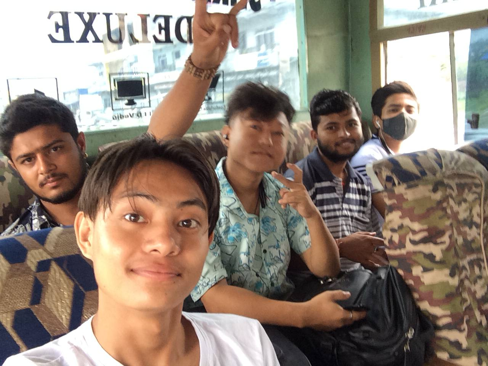

Dharan
By Nischal
The day was usual as always.We all boys were having some discussion in a break. The discussion was all about everyone’s break up and life lessons.Everyone had a different story, some were funny, some were useless and some were made up stories. After listening to all story stuffs one came up with an idea of going for one-day tour to a very different place. We all were like- Not a bad idea. A different place carries a different vibes. So it was not a planned trip but out of sadness and boredness we all agreed going somewhere far from where we were. We decided to go Dharan, to the top hills- peaceful and fresh. We planned to meet at the junction the next morning.
The very next day, we the seven boys bunked the class, we had Guitar, bag packed up with underwears and a packet of ciggeretes. We took a bus and started our trip to Dharan.
 Going to dharan
Dharan is beautiful place cool, clean, well managed with high hills and water streams. The weather that day was supporting too.It was cloudy, cool day with low sun beams. After we reached Dharan the first thing the boys were doing was roaming everwhere around searching for ciggeretes. After walking while in the roads of Dharan , we entered route which leads us to various temples.


Climbing and reaching to the temple which is in top of hills , we are exhausted. You can see, our friend Binayak Sharma resting for a while.
After worshiping and praying to the gods, we ate quick snacks . We decided to rest for few minutes and clicked some photos and jam with music. It was a fun expericence to sing at the top of hills.
And after this , we headed to find the any available spots where we can swim. The weather was hot so we needed a clean cold water . We hadn’t had much ideas where we can find one. So , we started searching on our own.
Some random photos taken on our way to find the swimming spots
After hour of walking, we finally found a small man made bathing spot and took the bath. It was refreshing.
Some Videos
And we ended our trip. Thanks for reading.
Hope you like this blog
Review appreciated.
Send me your review on Linkdein
Click the below link to subscribe our newsletter to not miss any amazing content.